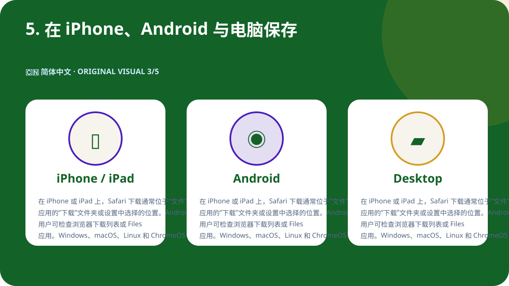

快速答案
打开包含视频的单条 X 帖子，确认它在正常访问条件下公开可见，再通过分享菜单复制帖子链接。把该 URL 粘贴到 Downloader-X，选择结果中真实显示的 MP4 版本，保存后播放开头、中间和结尾，检查画面与声音。此流程仅适用于你自己的视频、具有兼容许可的媒体，或已经获得所有者授权的内容。处理公开链接不应要求 X 密码、验证码、浏览器 Cookie 或远程控制设备。
1. 确认公开访问与使用权
应从原始帖子开始，而不是个人主页、搜索结果、截图或转发预览。把 URL 放到新标签页，核对账号、文字、缩略图和时长。帖子公开只说明当前可以访问，并不自动允许转载、剪辑、出售或用于广告。如果账号受保护、帖子已删除、需要特殊登录、存在地区或年龄限制，请停止处理并向所有者索取授权副本，不要尝试绕过访问控制。
版权、同意与署名
公开可见是一种访问设置，不是使用许可。只保存自己的视频、具有兼容许可的媒体，或已经得到明确授权的内容。若要转载、剪辑或商业使用，必须确认授权包含该用途并保留书面证明。涉及个人信息、私人地点或未成年人的画面，即使来自公开帖子，也应谨慎处理隐私和同意，并且不得把他人的作品冒充为自己的作品。
2. 复制准确的帖子 URL
输入链接必须指向包含视频的一条具体帖子。在 X 的分享菜单选择复制帖子链接，再到新标签页打开一次，确认最终目的地。个人主页或时间线包含多条内容，无法明确指定目标视频。提前检查能把链接错误与服务故障区分开，也可以减少重复点击造成的不完整文件和重复副本。
- 打开原始视频帖子并进入单条帖子页面。
- 通过分享菜单复制链接，不要手动输入 URL。
- 确认域名为 x.com 或 twitter.com，且链接指向具体帖子。
- 在新标签页核对账号、文字、缩略图和视频。
- 把来源 URL 和授权证明与文件一起保存。
3. 粘贴链接并只选择真实结果
把已经验证的 URL 粘贴到 X 下载页面，只启动一次处理并等待真实选项。结果出现后先比较标题或预览是否与原帖子相同。只能选择结果明确提供的格式和清晰度；如果来源没有 4K、1080p 或其他版本，就不应把营销文字当作实际能力。处理失败时应显示清楚的错误，不应把 HTML 页面、安装程序或其他错误文件冒充为成功下载的视频。
简体中文版原创演示视频
本视频专为此页面制作，画面、配色、文字和其他语言版本均不重复。
4. 根据来源与用途选择 HD
HD 标签必须来自公开帖子实际提供的媒体版本。手机和笔记本通常可优先考虑 720p，在清晰度、流量和存储之间较为平衡；当来源确实提供且需要大屏细节时，再选择 1080p。相同分辨率也可能因为码率、编码器和压缩程度不同而呈现不同质量，因此要实际播放，不要只看文件名。如果声音很重要，应选择明确包含视频和音频的版本，并在保存后立即检查音轨。
5. 在 iPhone、Android 与电脑保存
在 iPhone 或 iPad 上，Safari 下载通常位于“文件”应用的“下载”文件夹或设置中选择的位置。Android 用户可检查浏览器下载列表或 Files 应用。Windows、macOS、Linux 和 ChromeOS 用户应先查看下载文件夹与浏览器记录，再决定是否重试。空间不足时删除无用副本或选择较低清晰度。不要因为某个页面声称必须安装，就下载来源不明的管理器或扩展程序。

6. 验证保存后的文件
进度条消失并不代表任务完成，只有文件能够作为视频正常播放才算成功。归档或分享前请检查：
- 类型与所选视频一致，例如 MP4，而不是 HTML 或安装程序。
- 大小不为零，并与时长和清晰度大致匹配。
- 播放开头、中间和结尾，确认画面、时长与声音。
- 记录文件名、文件夹、来源 URL、授权或许可。
长期保存前记录来源
如果项目包含多个片段，请记录账号、发布日期、永久 URL、简短内容说明、选择的版本、文件大小以及保存依据。这样可以防止文件失去来源，也方便以后核对署名和许可条件。对于引用帖子、回复或线程，应复制真正包含视频的帖子链接，不要误把只是引用或讨论该视频的帖子当作原始来源。
从来源到文件逐层排查
链接打开个人主页
返回视频帖子，通过分享菜单复制 URL；主页不能指定单个媒体。
只有登录后才能打开
内容可能受保护或限制。不要提供凭据或 Cookie，应向所有者索取授权副本。
没有清晰度选项
确认帖子仍存在、包含原生视频、复制的 URL 能打开，然后只刷新一次。
保存成 HTML 而不是 MP4
删除该文件，不要修改扩展名，重新检查帖子 URL 和真实视频选项。
视频没有声音
检查原帖子、设备音量和另一款可信播放器；如之前选了纯视频版本，应选择带音频的组合版本。
安全与隐私
公开链接流程不需要 X 密码、双重验证代码、导出的 Cookie、远程控制、可执行安装包或关闭设备保护。如果页面提供 .exe、.dmg 或与视频无关的扩展程序，应立即停止。打开文件前核对域名、类型和来源。在共享设备上，把已授权文件移出公共文件夹，并删除不再需要的临时副本。
整理文件并避免重复
文件名可以包含简短主题、账号、日期和清晰度，例如 topic_creator_2026-08-30_720p.mp4。把临时文件与已验证文件分开，只保留真正需要的版本。重复点击不会提升画质，只会产生同名副本或部分下载。把来源 URL、署名和使用条件保存在同一项目的文本记录或表格中。
最后 60 秒检查表
- URL 打开正确的视频帖子。
- 无需绕过访问控制即可公开查看。
- 你拥有视频或有权保存。
- 服务不要求凭据或 Cookie。
- 所选清晰度确实出现在结果中。
- 设备有足够存储空间。
- 文件类型与大小合理。
- 画面和声音能够完整播放。
- 来源 URL 与署名已经记录。
- 后续用途不超过授权范围。
常见问题
x.com 和 twitter.com 链接都可以吗？
可以，只要它们指向同一条公开帖子，并且已经检查最终目的地。
为什么并非所有帖子都有 1080p？
因为分辨率取决于来源文件和实际可获取的媒体版本。
能下载受保护账号的视频吗？
不能。本指南只处理公开帖子，也不提供绕过限制的方法。
iPhone 文件保存在哪里？
通常在“文件”应用的“下载”文件夹或 Safari 设置的位置。
得到 HTML 文件怎么办？
删除它，不要改扩展名，重新核对 URL 和视频选项。
公开帖子可以直接转载吗？
不可以。需要覆盖再发布和预期用途的许可或授权。
其他语言与相关指南
从已验证的公开帖子链接开始
粘贴正确 URL，只选择真实提供的清晰度，并在使用前验证文件。
使用 Downloader-X 处理 X 视频